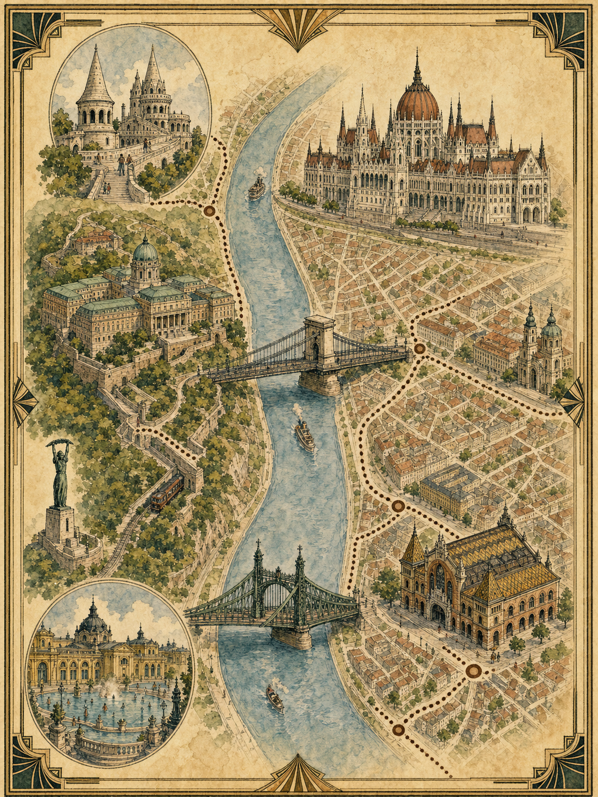

布达佩斯: 市场和复古酒店感
中央市场、Rétes、Fakanal、New York Palace/New York Cafe氛围都来自你前面给的视频线索。因为现在布达佩斯只住一晚且住在城堡区，中央市场改为时间充裕时的备选，不占10月3日去维也纳的上午；Hilton周边城堡线进主线。
Central MarketRétesNew York Palace
8天7晚, 10月2日从布达佩斯开始, 10月3日乘上午火车到维也纳听金色大厅音乐会, 10月4日按已出票的12:30列车前往Hallstatt短停后进入Gosau, 10月5日完整留给Gosausee与Gosau、不折返Hallstatt, 10月7日从湖区转场到布拉格。核心原则是跨城日只做移动和一条轻路线, 把湖区完整留给山、湖和小镇。

主线按图一固定为 Budapest 1晚 - Vienna 1晚 - Salzkammergut 3晚 - Prague 2晚。布达佩斯只做抵达日城市切片, 维也纳锁定10月3日下午和金色大厅音乐会, 湖区完整留出10月4日至6日, 10月7日再从湖区去布拉格。
不是把视频里所有点都堆进来, 而是按“UP主反复强调、画面或字幕能确认、和你们慢旅行路线顺路”三层筛选。能确认的放进主线或备选, 不能确认的只进附录, 不硬猜。
中央市场、Rétes、Fakanal、New York Palace/New York Cafe氛围都来自你前面给的视频线索。因为现在布达佩斯只住一晚且住在城堡区，中央市场改为时间充裕时的备选，不占10月3日去维也纳的上午；Hilton周边城堡线进主线。
TARO维也纳vlog里的Cafe Central、Demel被保留为经典备选, 主线改成10月3日音乐会周边的Karlsplatz、Karlskirche、Secession和Café Sperl；因为只有一晚，更需要文艺、顺路、少排队。
湖区住宿已经确定为Gosau两晚加St. Wolfgang一晚。10月4日把Hallstatt安排成铁路转巴士前的短停，10月5日再完整留给Gosausee和新手徒步，10月6日以换酒店和Wolfgangsee湖岸为主。
华生Going方向被用于餐厅判断: Lokál、Kantýna放入晚餐候选, Yami Sushi只作为连续中欧菜后的换口味备选。景点上采用清晨查理大桥, 避开白天桥面人潮。
New York Palace和Hotel Secession an der Oper能从视频线索确认, 所以进住宿附录。布拉格和湖区如果视频里只出现画面但无法确认酒店名, 暂时不写成推荐, 避免幻觉。
如果你把B站视频字幕、弹幕高赞评论或关键画面截图再给我, 我可以继续做到“每个Day标注来自哪支BV、UP主推荐原话、我们采用或放弃的理由”。现在这一版是基于可确认线索的路线级融合。
全部日期的出行方式、住宿节点和购票入口集中在这里。路线固定为 Budapest 1晚 - Vienna 1晚 - Gosau 2晚 - St. Wolfgang 1晚 - Prague 2晚。跨城优先用 ÖBB/OÖVV，10月3日用上午火车衔接音乐会；2026年10月精确班次、站点和浮动票价仍以购票日页面为准。
这里用OpenStreetMap底图和Leaflet组件绘制每日city walk。点击城市和日期可以切换路线, 地图点位可打开弹窗, 也保留一键跳转Google Maps的路线入口。
10月2日早上7点到达布达佩斯希尔顿酒店寄存行李。酒店就在布达城堡区, 先走渔人堡、马加什教堂和城堡区小路, 午后下到多瑙河, 傍晚看国会大厦和链子桥亮灯；不再塞中央市场、温泉或重博物馆。
10月3日上午只做布达佩斯收尾和上车，推荐搭10:30从Budapest-Keleti出发、13:20抵达Wien Hbf的火车。民宿在中央车站附近，放下行李后只走一条 Karlsplatz—分离派—金色大厅线；音乐会时间是全日硬节点，其他景点都为它让路。
住宿按订单执行：10月4–6日住COOEE alpin Hotel Dachstein（Gosauseestraße 15, Gosau），10月6–7日换到TAUROA Landhaus zu Appesbach（Au 18, St. Wolfgang）。湖区路线正式确定为“10月4日按已出票列车到Hallstatt短停约1小时后去Gosau；10月5日前湖慢走与Gosau村，不折返Hallstatt；10月6日转场到Wolfgangsee湖岸”。
三条路线按“先平缓、再带一点坡度、最后才考虑延伸”排列。每条都保留回撤点，不把第一次徒步变成体力测试；山路、公交和营业状态出发前再核对。
10月7–9日住Hotel Residence U Černého Orla（Mostecká 11，查理大桥小城一侧）。抵达日只做酒店周边的Kampa—Čertovka—桥景，10月8日清晨从门口走上查理大桥，再上城堡；这样把最拥挤的景点放在最舒服的时段。
本区先列已确认的四段住宿；下方候选酒店仅作视频线索和路线比较参考，不覆盖你们已经订好的订单。价格和评分会浮动，实际入住信息以订单和酒店官网为准。

已确定住布达佩斯希尔顿，地址为Hess András tér 1–3，位于布达城堡区。抵达日7:00先寄存行李，渔人堡、马加什教堂和城堡区小路都能从酒店附近开始。

维也纳按你已确定的中央车站附近民宿安排。10月3日13:20抵达后先放行李，去Musikverein只需短程步行/电车；10月4日上午退房和早餐，12:30按已出票列车从Wien Hbf西行，在Hallstatt短停后去Gosau。

湖区按订单分两段：10月4–6日住COOEE alpin Hotel Dachstein（Gosauseestraße 15, Gosau）两晚；10月6–7日住TAUROA Landhaus zu Appesbach（Au 18, St. Wolfgang）一晚。

已确定住布拉格小城一侧的Hotel Residence U Černého Orla，订单地址为Mostecká 11（官网完整地址Mostecká 279/11, Praha 1）。查理大桥就在门口，最适合把清晨桥景和城堡线拆开。
时间只给到能帮助你们不赶车的程度。跨城日保留换乘余量，湖区按天气二选一，住宿地址和入住/退房时间以订单为硬节点。
Hilton Budapest就在Buda Castle区，抵达日把上坡景点放在最前面；午后下到河岸，傍晚回到酒店附近休息。
先解决行李和早餐，不把长途抵达日变成赶景点日。
酒店就在景点上方，先看最高处，再沿城堡区小路慢慢走。
比主广场安静的城堡区小众线，适合看佩斯屋顶和多瑙河。
下山后走河岸，傍晚再回酒店，不安排温泉和博物馆。
这一天的核心不是刷景点，而是保证火车和19:00金色大厅晚场都从容。推荐10:30从Budapest-Keleti出发、13:20抵达Wien Hbf；民宿在中央车站附近，放下行李后走一条靠近Musikverein的短线。
早餐后退房，预留前往车站、进站和找站台的时间；上午不再塞中央市场。
推荐乘MÁV/ÖBB可查到的10:30班，约13:20抵达Wien Hbf；实际站台和运行状态以当天App为准。
按19:00晚场安排；只选一处咖啡休息，17:15后开始收束，18:15前到场。若票面实际写15:30，则删除这段并直接去Karlsplatz。
Markus Poschner指挥，曲目为肖斯塔科维奇第九交响曲；演出后就近晚餐，次日12:30按已出票列车前往Hallstatt。
10月4日采用“12:30出发、Hallstatt约1小时单向短停、当晚去Gosau”的正式方案。短停只看湖岸与聚落，不进室内和山上景点；10月5日不会回来补游。
上午只退房、早餐和前往车站；14:30到Attnang-Puchheim后换乘Hallstatt方向列车。
火车站在湖对岸，接约16:30渡船进村；列车明显晚点时，以现场衔接为准，不硬赶。
约1公里的单向慢走，保留湖面、聚落与教堂外观；不进博物馆、盐矿或Skywalk。
乘544约18:09/18:12到Gosaumühle，换18:30的542，约18:44到Gosau Abzw Pass Gschütt。
10月5日默认不折返Hallstatt。上午把时间留给Vorderer Gosausee环线、摄影与湖边停留；午后回Gosau休息，再走溪谷短段和新教教堂。后湖往返只是一套替代整日方案，不与默认路线叠加。
乘542约08:29到湖边；具体班次按OÖVV当天查询，先保存11:45与12:50两个回程选择。
官方路线约4.2公里、约1小时、基本平缓；多留时间给Dachstein/Gosaukamm倒影、摄影与休息。
根据午餐和天气选择542，不追赶单一班次；回Gosau后就近午餐并在酒店休息。
走溪谷平缓段，再看建于19世纪的地方教堂；按体力缩短，16:30后回酒店整理次日行李。
上午从Gosau转到Wolfgangsee，入住Landhaus zu Appesbach。新酒店本身就在湖边，下午先稳稳安顿，再按体力在湖岸散步和Malersteig入门环线之间二选一。
早餐后退房，箱子按换乘顺序整理好；先按OÖVV当天结果到Gosaumühle/Bad Ischl方向。
接546到St. Wolfgang后，先把行李送到Landhaus zu Appesbach（Au 18）；不拖箱绕老城，必要时用短程出租车/当地接驳。
酒店私家湖岸、草地和码头是小众打卡点；再沿湖边走进老城和朝圣教堂，节奏比跨湖追景点舒服。
官方路线约2.9公里、58分钟、爬升118米，从St. Wolfgang集市广场出发；有坡但短，湿滑、疲惫或抵达偏晚时直接取消。
就近结束，不再跨湖追餐厅；次日是湖区到布拉格的长移动日。
按订单11:00前退房，但建议早餐后尽早出发：546到Bad Ischl，再经Attnang-Puchheim/Linz前往布拉格。抵达后住Mostecká 11附近，不安排Salzburg观光。
酒店早餐和湖边最后一眼，随后按11:00前退房。
546和铁路换乘，具体车次以当日搜索为准，宁可早出发也不把抵达压到最后。
Mostecká 11，订单入住时间15:00–23:30。放好行李后只在小城一侧散步。
从酒店出门即可完成，体力不足时只看桥和河岸。
酒店位置非常适合错峰：查理大桥清晨步行可达，之后沿Nerudova上城堡；下午用Nový Svět、Kampa或Vojanovy Sady留一点安静。
先拍桥塔和河面，拍完就离开桥面，把时间留给城堡。
收费景点集中在上午，抓大教堂、王宫和黄金巷，不每个馆都深挖。
用安静街巷替代拥挤主轴，顺坡回到Malá Strana。
Vojanovy Sady最省力；天气特别好再去Letná看桥群和屋顶。
离境日不安排新的收费景点。早餐、收行李、退税和去机场比最后补一处建筑更重要。
不跨河，不为最后一个景点制造新的交通风险。
按订单11:00前退房，检查护照、退税单、充电器和行李。
带箱子优先接送；若坐公共交通，59路接Metro A，目标11:00–11:30到机场。
这里把视频里明确出现、评论补充、社媒高频推荐和路线高度重合的餐厅咖啡馆拆成卡片。实心菱形是放进主线, 空心圆是顺路备选, 短横是换口味或不强推。
B站来源: 欧洲_Miaomiao中央市场详解。现在布达佩斯只住一晚且住城堡区，若10月2日体力和交通都允许再去，不进入硬路线。
B站来源: 原来是西门大嫂中央市场段。保留为中央市场备选，不为了吃饭额外绕路，也不占10月3日上车时间。
多支vlog和New York Palace住宿线都出现。建筑复古戏剧感强, 但不建议占用主餐名额。
Before Sunrise氛围线 + 旅拍vlog高频。比头部大咖啡馆更像旧维也纳日常, 适合D2音乐会前的19:00场备选。
TARO维也纳vlog提及。两家都经典, 但排队和游客密度更高, 放在错峰或替换位。
维也纳街头小吃高频。歌剧院和Albertina旁, 适合咖啡馆排队失败时快速补能量。
住宿订单对应的Gosau落脚点。10月4日抵达后不再跨镇，10月5日徒步回来直接在酒店休息和吃饭。
湖区雨天与皇室小镇路线备选。D4若Gosausee能见度差，或D5换酒店时在Bad Ischl等车，可用这条替代。
Wolfgangsee路线餐厅备选。D5入住Landhaus zu Appesbach后，可在St. Wolfgang老街顺路吃，不再额外跨镇。
布拉格本地餐厅路线重合。现在酒店在小城一侧，D6抵达后先按Mostecká附近就近选择，不为餐厅横穿城市。
布拉格咖啡馆与旅拍vlog高频。D7城堡线结束后再选，或D8只在酒店附近解决早餐。
华生Going评论区校正。作为连续中欧菜后的换口味选择保留, 但不占主线旅行氛围。
不做大而全清单, 只放真正适合这次路线的书、电影和纪录片。关键词是多瑙河、奥匈帝国、维也纳咖啡馆、布拉格文学和湖区自然。
最接近你想要的“旅行笔记”气质: 不是攻略, 而是沿着河流写欧洲历史、边境、语言和人的旅行文学。适合在布达佩斯和维也纳之前读。
Stefan Zweig写旧维也纳精神世界。读完再去咖啡馆、国家图书馆、Ringstrasse, 会更有“旧欧洲消失前夜”的感觉。
Joseph Roth的奥匈帝国小说代表作。适合理解为什么布达佩斯、维也纳、布拉格共享一种帝国遗产和衰落气质。
Bohumil Hrabal比Kafka更日常、更好进入。适合布拉格老城、酒馆、二手书店和荒诞感。
最贴合你们city walk气质的电影。维也纳街头、唱片店、河岸、咖啡馆都能直接变成行程里的氛围坐标。
黑白战后维也纳、摩天轮、街巷和下水道, 影史经典。适合给维也纳增加一点黑色电影质感。
布拉格大量取景, 但讲维也纳音乐神话。好看程度高, 也适合把Prague和Vienna的剧场感串起来。
1996版开场布拉格段很经典。不是最人文, 但去查理大桥和老城前看一遍会很有辨识度。
不是真实布达佩斯取景, 只作为复古酒店、美术、色彩和手札排版灵感。适合出发前一晚轻松看。
看Budapest、Vienna、Prague三集即可。短、实用、城市结构清晰, 临行前快速建立方位感。
很适合这次火车串联中欧的路线感。节目用老旅行指南走欧洲铁路, 比普通攻略更有旧欧洲气质。
本次已确认住宿以“住宿优选”主区为准；这里保留B站视频中能确认的酒店和其他候选，方便做氛围参考，不作为本次行程的替代订单。
只收视频画面、标题、简介或评论中可以确认名称的住宿。布拉格部分有视频出现酒店介绍但未公开酒店名, 暂不列入推荐。

这一组按路线便利、复古感和预算压力整理, 用来和B站住宿参考一起做最终预订比较。


这些点不作为“必须打卡”, 而是塞进对应city walk里的低成本补光点。原则是顺路、好拍、不会吃掉半天。
电影模块按“能不能和行程自然重合”筛选。The Grand Budapest Hotel只作为布达佩斯复古氛围参考, 不标成真实布达佩斯取景。

"Keep your hands off my lobby boy!"

"I like to feel his eyes on me."

"Nobody thinks in terms of human beings."

"Your mission, should you choose to accept it."

"Forgive me, Majesty. I am a vulgar man."

"The name's Bond. James Bond."